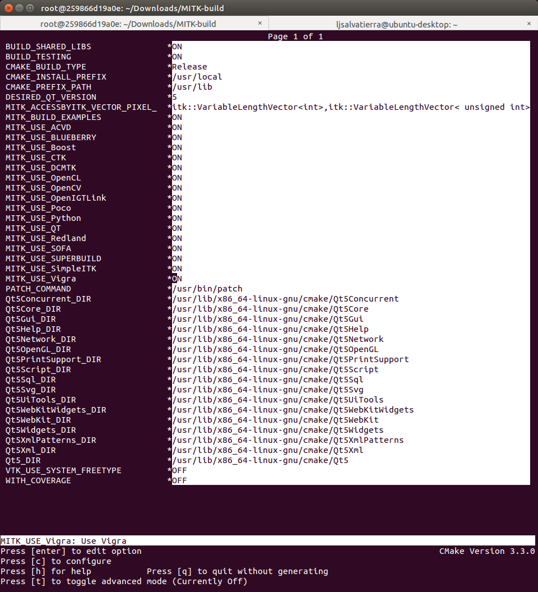
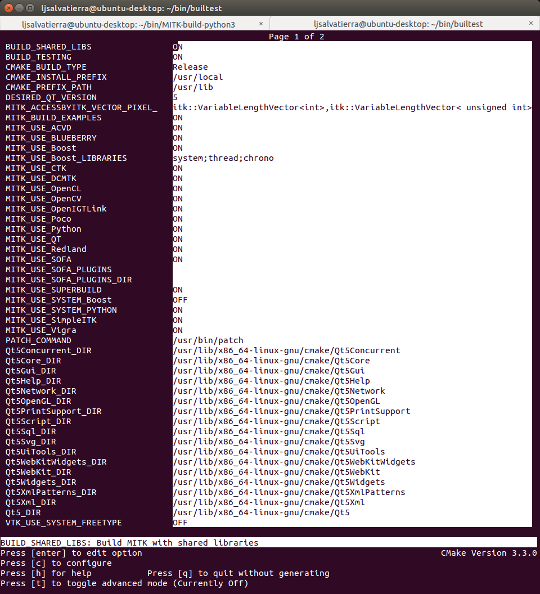

Required packages¶
- Docker
- GIT
- CMake (version 3.2 or higher. Current stable 3.3)
- Qt 5.x
Note: Make sure that you select a Qt version which provides the right OpenGL-enabled packages for your architecture and compiler.
Install dependencies¶
Install Docker¶
$ sudo apt-get update
$ sudo apt-get install curl
$ curl -sSL https://get.docker.com/ | sh
- Option 1: Ubuntu 14.04
Pull a Docker container with Ubuntu:14.04 and run it:
$ docker pull ubuntu:14.04
$ docker images
$ docker run -i -t <IMAGE_ID> /bin/bash
Once inside the Ubuntu 14.04 container, install MITK dependencies:
root@XXXXX:$ apt-get update && apt-get install -y \
software-properties-common \
&& apt-add-repository multiverse \
&& apt-get update \
&& apt-get install -y \
bison build-essential curl git libarchive-dev libbz2-ocaml-dev libcurl4-openssl-dev \
libexpat-ocaml-dev libfaac-dev libmp3lame-dev libopencore-amrnb-dev libopencore-amrwb-dev \
libqt5svg5-dev libqt5webkit5-dev libqt5xmlpatterns5-dev libtheora-dev libtiff5-dev \
libvorbis-dev libvpx-dev libwrap0-dev libxi-dev libxmu-dev pkg-config qt5-default \
qtscript5-dev qttools5-dev qttools5-dev-tools vim wget yasm libgtk2.0-dev
- Option 2: Ubuntu 15.04
Pull a Docker container with Ubuntu 15.04 and run it:
$ docker pull ubuntu:15.04
$ docker images
$ docker run -i -t <IMAGE_ID> /bin/bash
Once inside the container:
root@XXXXX:$ apt-get update && apt-get install -y \
software-properties-common \
&& apt-add-repository multiverse \
&& apt-get update \
&& apt-get install -y \
bison build-essential curl git libarchive-dev libbz2-ocaml-dev libcurl4-openssl-dev \
libexpat1-dev libfaac-dev libmp3lame-dev libopencore-amrnb-dev libopencore-amrwb-dev \
libqt5svg5-dev libqt5webkit5-dev libqt5xmlpatterns5-dev libtheora-dev libtiff5-dev \
libvorbis-dev libvpx-dev libwrap0-dev libxi-dev libxmu-dev python-dev pkg-config \
qt5-default qtscript5-dev qttools5-dev qttools5-dev-tools vim wget yasm libgtk2.0-dev
Install MITK in the container¶
Now on follow the installation instructions in this post.
Build MITK¶
root@XXXXX:$ git clone http://git.mitk.org/MITK.git
root@XXXXX:$ mkdir MITK-build && cd MITK-build
root@XXXXX:$ ccmake ../MITK


- Note: in Ubuntu:14.04 you CAN’T select the option ‘MITK_USE_Python’, because It needs Qt >= 5.3
- Tips:
- For a complete installation, press ‘t’ to toggle the advance view. You may select all the options you desire, like compile with all applications and plugins.
- Also, if you selected
MITK_USE_SYSTEM_PYTHON, you may want to changePYTHON_EXECUTABLE,PYTHON_INCLUDE_DIRandPYTHON_LIBRARYto your respective installation. For now, It’s not possible to use Python 3, so you’ll have to use Python2.7.
# Press 'c' to configure and 'g' to generate and exit.
root@XXXXX:$ make
# I do NOT recommend running `make` with the option `-j4`. You'll get dependency related errors during the build.
# This last command will take several hours, so go and take a walk (in another city) :)
root@XXXXX:$ exit
$ docker ps -l
CONTAINER ID IMAGE COMMAND CREATED STATUS PORTS NAMES
b378149da6c6 ubuntu:15.04 "/bin/bash" 8 hours ago Exited (0) 10 seconds ago focused_newton
$ docker commit <CONTAINER_NAME> ubuntu15/mitk:latest
# See the CONTAINER_NAME on the right of `docker ps -l`
Running MITK¶
- Create a Dockerfile.:
FROM <IMAGE>
MAINTAINER <YOUR_NAME>
ENV MITK_WORKBENCH /path/to/MITK-build/bin/MitkWorkbench
CMD $MITK_WORKBENCH
- Where
<IMAGE>is the name of the image where we have installed MITK. - e.g.: FROM ubuntu15/mitk:latest
$ docker images
REPOSITORY TAG IMAGE ID CREATED VIRTUAL SIZE
ubuntu15/mitk latest 19af721ab6a3 11 hours ago 13.2 GB
- Build a new image with the Dockerfile.:
$ docker build --rm -t mitk:15.04 .
$ docker images
REPOSITORY TAG IMAGE ID CREATED VIRTUAL SIZE
mitk 15.04 bdcce6cafa44 26 minutes ago 13.2 GB
$ docker ps -l
CONTAINER ID IMAGE COMMAND CREATED STATUS PORTS NAMES
2f140ab82356 mitk:15.04 "/bin/bash" 42 minutes ago Exited (0) 41 minutes ago silly_galileo
$ xhost +local:`docker inspect --format='{{ .Config.Hostname }}' <CONTAINER_ID>`
$ docker run -ti --rm -e DISPLAY=$DISPLAY -v /tmp/.X11-unix:/tmp/.X11-unix mitk:15.04

So what do you think? Did I miss something? Is any part unclear? Leave your comments below.
comments powered by Disqus